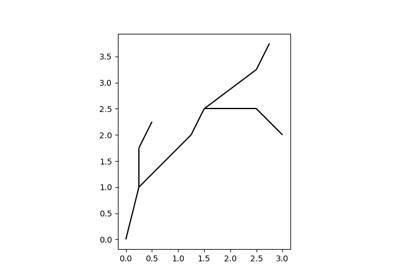

Examples#
The examples in this gallery demonstrate the functionality of the
numba_celltree package. Every example can be downloaded as either a Python
script or a Jupyter notebook for interactive exploration.

Spatial indexing of 1D networks and linear geometry
Spatial indexing of 1D networks and linear geometry
Spatial indexing of 2D grids